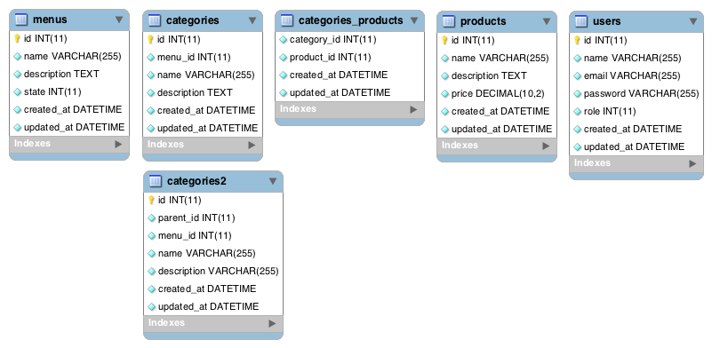
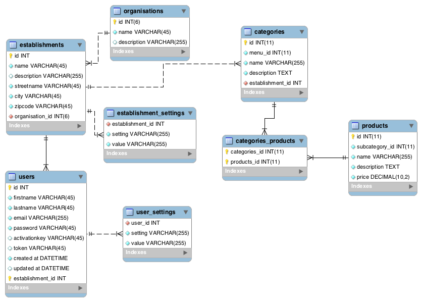
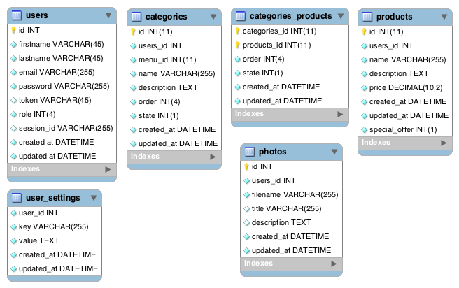
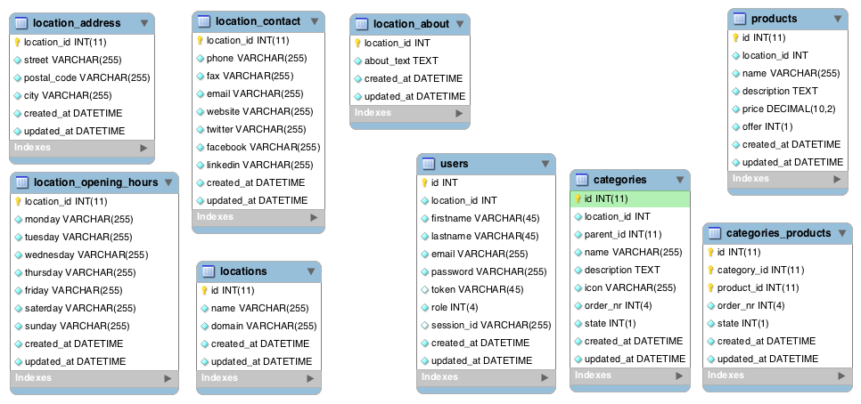

Database design
During all the phases of the project the database changed a lot. The least amount of tables was 5, the largest amount 9. One had foreign keys, the others did not. In this section the differences and choices that were made are found.
Version 0.1

What mattered in the first version was that there was at least something to show, because there was not a lot of time left. Therefore a structure was made up that did not allow any levels. A customer would make a menucard, after which the categories could be made. These categories were linked with a menucard. Then the customer was able to make subcategories and link them to categories. After all the previous steps were completed, the system allowed the customer to make products and link them to a subcategory. This was a very closed and limited system, but it worked.
Version 0.2
In this version there was a switch of framework. Kohana was deleted and the SexyFramework was born. At first there was not much time to take a closer look at the database design, but in the end a try was made to make the system more flexible. An extra table, named categories2, was created to support this type of system. Therefore the table subcategories became obsolete and was deleted. The pivot table linking the products to the subcategories was altered so products were linked to categories. In this way, products could be linked to a category, while that category has subcategories, which is much more flexible.
Version 0.3 and 0.4
This design is for two versions of the application. In version 3 there was a little bit of change in the database design, but in the fourth version it stayed the same. Therefore these versions are described together.
After some brainstorming the establishments and organisations tables were made. This would allow the administrator of the application to connect users to an establishment and establishments to an organisation. The key value build of the establishment settings allowed the user to have multiple options, like opening hours and contact information all in the same table. This design was very flexible, because there was no guideline to what information could be stored in this database. With the user settings table users were able to override the information that they inherited from their establishment. These settings could be anything, for example backend language.
Version 0.5
Back to what is really needed was the reason why this database is significantly different than the previous version. This version is build without looking to the previous designs and made with a list of functionalities that needed to be build. Because of the fact that pictures were needed for different parts of the application, a table was created to store and find pictures.
The order and state fields were added to products, categories and the pivot table that links those two.
At last all the tables got created_at and updated_at fields, so there would be more information on each row.
Version 0.6
The last version of the database during the project is version 0.6. The photo table is removed, because photos and images now get stored in folders in suck way, that the image module always can locate the files, just by checking where the request comes from.
The tables for locations were added again, so the information about locations could be stored again. The tables were created to split all the information, so there would not be one large table and the data could be saved seperated.